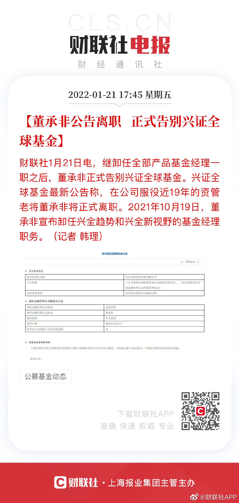

这就是主动基金的风险之一@财联社APP:【#董承非公告离职正式告别兴证全球基金#】财联社1月21日电，继卸任全部产品基金经理一职之后，董承非正式告别兴证全球基金。兴证全球基金最新公告称，在公司服役近19年的资管老将董承非将正式离职。2021年10月19日，董承非宣布卸任兴全趋势和兴全新视野的基金经理职务。（记者 韩理） 
手里拿着一半基金一半现金经历下跌，感觉就像半杯水。有些人看着半杯水，会觉得我好倒霉只有半杯水。有些人会很高兴，我还有半杯水呢。我就很高兴，看着猎物一步步走进伏击圈。至于那些下跌的持仓，我有个坚定的信念，就是它们极大概率会涨回去。股票我不敢这么说，持仓的基金很有信心。
不要催我买什么。高位一分钱没买，大家也一分钱没赔。我要听有些人的，已经赔很多了。买还是不买，什么时候买，什么价位买，我有自己的计划和判断。不一定对，但没人能影响我。谁要觉得自己车开得还可以，那就自己开。毕竟有些朋友有仓位，有些没有，情况也不同。没事儿别老抢方向盘。
今年开年的弱势，绝大多数人根本就没有一点思想准备。导致直接就乱了。我们对今年有了提前的预期，所以这样走就早已有了思想以及配置上面的准备，所以根本不会乱。之后，如果还按照剧本走的话，就是要在最多人慌乱的时候捡辣鸡。这样，就可以为今年余下的时间，以及更远的未来拿到可以赚钱的筹码。预测有用吗，这要看你怎么用。对不对。它是用来指导战略的，不是用来指挥战术的。体会一下。